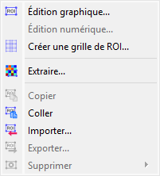
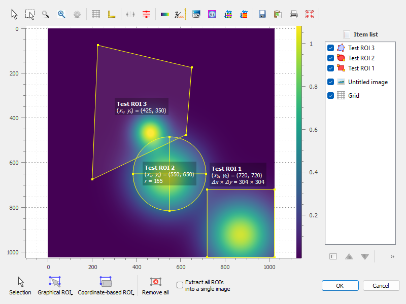
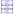
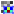
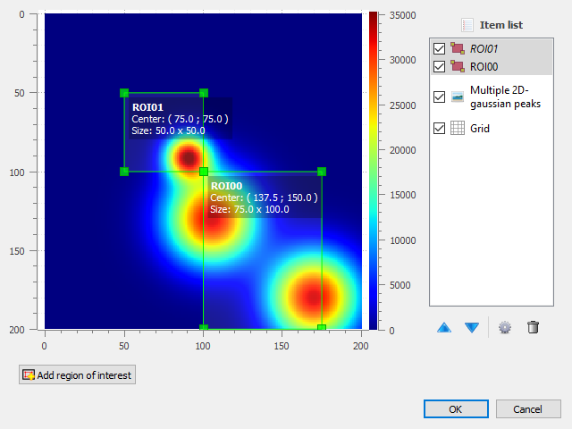

Régions d’intérêt (ROI)#
Cette section décrit comment manipuler les régions d’intérêt (ROIs) pour les images dans DataLab.

Capture d’écran du menu « ROI ».#
Le menu « ROI » vous permet de gérer les régions d’intérêt (ROIs) associées à l’image actuelle.
Voir aussi
Pour plus d’informations sur les métadonnées d’image, voir la section Manipuler les métadonnées et les annotations.
Les régions d’intérêt (ROI) sont des zones d’image définies par l’utilisateur pour effectuer des opérations spécifiques, des traitements ou des analyses sur elles.
Les ROI sont prises en compte dans presque toutes les fonctionnalités de calcul de DataLab :
Les fonctionnalités du menu « Opérations » sont appliquées uniquement sur la ROI si elle est définie (sauf si l’opération modifie la forme des données - comme l’opération de redimensionnement - ou la taille des pixels - comme l’opération de binning).
Les actions du menu « Traitement » sont effectuées uniquement sur la ROI si elle est définie (sauf si le type de données du signal de destination est différent de celui de la source, comme dans les fonctionnalités d’analyse de Fourier ou comme dans les opérations de seuillage).
Les actions du menu « Analyse » sont effectuées uniquement sur la ROI si elle est définie.
Note
Les ROI sont stockées en tant que métadonnées et sont donc attachées à l’image.
Le menu « ROI » vous permet de :
« Édition graphique »
 : ouvrir une boîte de dialogue pour gérer les ROI associées à l’image sélectionnée (ajouter, supprimer, déplacer, redimensionner, etc.). La boîte de dialogue de définition des ROI est exactement la même que celle de l’extraction des ROI (voir ci-dessous).
: ouvrir une boîte de dialogue pour gérer les ROI associées à l’image sélectionnée (ajouter, supprimer, déplacer, redimensionner, etc.). La boîte de dialogue de définition des ROI est exactement la même que celle de l’extraction des ROI (voir ci-dessous).

Une image avec une ROI.#
« Édition numérique » : ouvrir une boîte de dialogue pour modifier les paramètres des ROI sélectionnées numériquement (c’est-à-dire à l’aide d’un formulaire simple). Cela vous permet de définir ou de modifier des ROI en fonction de valeurs numériques.
« Créer une grille de ROI »

: ouvrir une boîte de dialogue pour créer une grille de ROIs sur l’image sélectionnée. Cela vous permet de définir plusieurs ROIs réparties uniformément sur l’image.« Extraire »

: extraire la ROI définie des images sélectionnées. Cela créera une nouvelle image pour chaque ROI (ou une seule image, si l’option « Extraire toutes les ROIs dans une seule image » est sélectionnée dans la boîte de dialogue), avec les mêmes métadonnées que l’image d’origine, mais avec les données correspondant uniquement à la ROI. Les nouvelles images seront ajoutées à l’espace de travail actuel.« Copier »
 : copier la ROI définie des images sélectionnées dans le presse-papiers. Cela vous permet de coller la ROI dans une autre image ou de l’utiliser dans d’autres opérations.
: copier la ROI définie des images sélectionnées dans le presse-papiers. Cela vous permet de coller la ROI dans une autre image ou de l’utiliser dans d’autres opérations.« Coller » : coller la ROI copiée du presse-papiers dans les images sélectionnées. Cela ajoutera la ROI aux images, vous permettant de définir ou de modifier des ROI en fonction de celles précédemment copiées.
« Importer »
 : importer des ROI à partir d’un fichier. Cela vous permet de charger des ROI précédemment enregistrées dans l’image actuelle.
: importer des ROI à partir d’un fichier. Cela vous permet de charger des ROI précédemment enregistrées dans l’image actuelle.« Exporter »
 : exporter les ROI définies vers un fichier. Cela vous permet de sauvegarder les ROI pour une utilisation ultérieure ou de les partager avec d’autres.
: exporter les ROI définies vers un fichier. Cela vous permet de sauvegarder les ROI pour une utilisation ultérieure ou de les partager avec d’autres.« Supprimer tout » : supprimer toutes les ROI définies pour les images sélectionnées.
{kind=link}
{kind=link}
{kind=link}
{kind=link}

Boîte de dialogue d’extraction des ROI : la ROI est définie en déplaçant la position et en ajustant la taille d’une forme rectangulaire.#